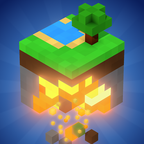

Powder Box 3DDelete your account
Here you can delete your account in Powder Box 3D by Last Thylacine. Enter your nickname and password, and the account is deleted right away.
You can also do this in the game: main menu → your nickname → “Delete account”.
You're signed out on all devices. Your saves and worlds on the phone are still there.
What is deleted
- Your nickname and password
- Sign-ins on all your devices
- Maps you have published
What is kept, and for how long
- For 30 days nobody can take your nickname, so no one can pose as you. It is no longer linked to you, and after that anyone can take it.
- Backup copies of the server database are kept for up to 90 days, then deleted automatically.
- Saves, worlds and settings are stored on your device and are not deleted. To remove them, uninstall the game.
- Ad and analytics data are handled by Appodeal and GameAnalytics. See the privacy policy for details. Privacy policy
Forgot your password?
A password can't be recovered: accounts have no email, and without the password we can't confirm the account is yours. Write to {mail} with your nickname and player ID (shown under your nickname in the game), and we'll help if we can confirm it's you.